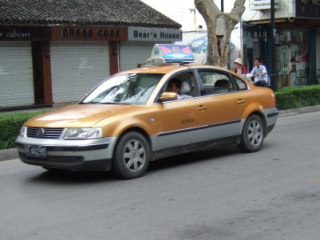

中国のタクシーの乗り方
日本と違い中国のタクシーは格段に安く、また都市部ではかなり数があるため多くの日本人観光客や現地駐在の日本人が利用します。「中国語が全く話せないけどタクシー乗れるの？」「日本とシステムって同じ？」いろいろあると思いますが、ここでは初心者流の極意についてご紹介します。
タクシーを探そう
中国の都市部では流しのタクシーが非常に多いです。日本ですとタクシー乗り場や駅前に行かないとなかなか探せないタクシーですが、中国では結構走っています。タクシーの感じは日本とよく似ているのでよくある乗用車タイプの車で、天井に看板や広告があるものが多いです。


青や黄色、赤など目立つ色が多いですが、その都市によって色は様々です。日本では「空車」とフロントガラスの下あたりに表示がありますね、中国では・・・
といった表示の看板が空車（営業運転しています）という意味ですので、この表示のタクシーを見つけたら呼び止めましょう。
タクシーを停める場所ですが、流しのタクシーについては基本的にどこで手を上げても停まってくれます。
一応繁華街では、「タクシー乗り場」というのが設けてある場所もありますが、あまり機能していません、どこでも手を上げれて停まってくれるので、乗りたい場所でタクシーを待ちましょう。
タクシーに乗り込みましょう
中国のタクシーの大半が自動ドアではありません（ココ重要）、待っていても永遠にドアは開かないので、自分でドアを開けましょう。日本では普通後部座席に乗りますが、中国では（特に1人の場合）助手席に乗る人も多いです。無理に助手席に乗る必要はありませんが、タクシーの運転手に行き先や道順を指示するには助手席の方が楽なようですね。
さて、乗り込んだら「ニーハオ」と簡単に挨拶しましょう。それから行き先を告げるわけですが、中国語が話せ無い場合は行き先のメモ（中国語）や地図があればその場所を指さして指示しましょう。
中国語が分からない方はガイドブックや地図、メモ用紙とペンは必ず持っておきましょう。
日本では考えられませんが、時間帯や目的地によっては乗車拒否をしてくる運転手さんもいます。単純な理由ですが、「今からご飯をたべるからだめだ」とか「そっちのほうは混んでるからだめ」とか身勝手な理由を言ってきますが、これが中国のスタイルです。・・・・ あきらめて次のタクシーを探しましょう。
タクシーが出発し出したら
運転手さんが出発と同時にメーターのスイッチを入れることを確認してください。上記で紹介した・・・看板を倒すとメーターのスイッチが入るシステムの車が多いので、ちゃんと倒しているかチェックしておきます、倒すとスイッチが入り何やら伝票に印刷されたり、初乗り運賃が表示されます。
何もせず出発したら、指をさしてメーターを起動させましょう。初乗り運賃は地域によって変わりますが、10～13元が相場で、1kmごとに2～3元のペースで上がっていきます。深夜はもちろん深夜料金が加算されます。
それでも日本円に換算すると初乗りが200円程度で、1キロ40円程度などでいかに中国のタクシーが安いかが分かりますね、1人ならともかく2～3人のグループなら、遠い場所でもとてもリーズナブルに移動できますね。
わざと遠回りする運転手も
特に日本人観光客だと道が分からないことをいいことに、わざと遠回りして料金を稼ぐ悪質ドライバーもいますが、まあこれもお国柄です。道を知っていて中国語も堪能なら「おかしいぞ！」と言えるものですが、なかなか観光で来たら道も言葉も分からないですし、そんなことも言えないですね。
到着したら料金を払って領収書をもらおう
到着したらメーターの料金を確認して、運転手さんに料金を払いましょう。ほとんどが現金でクレジットカード等は使えない場合が多いです、運転手さんにもよりますが、高額のおつりを嫌がる人もいます。なるべく小銭も持ってタクシーに乗るようにしましょう。最後に領収書はもらっておきましょう「ファーピャオ」（領収書）といえば、くれるはずです。領収書があると後々何かトラブルがあったり（タクシーに何か忘れたとか・・・）したときに証拠になりますので、帰国するまで持っていましょう。
変なタクシーに要注意
観光地や駅などにスタンバイしているタクシーでいわゆる無許可の「闇タクシー」です。料金は交渉制で、見た目はワゴン車や普通の乗用車なので見ればすぐわかります。こちらか依頼しなくても勝手に近寄ってきて、「どこへ行く？」などと営業を始めてきます。
このような車はほとんどが無許可営業、何かあった時の保険もあるのか怪しいものなので、よほどの緊急事態を除いては利用しないほうが賢明です。
中国旅行注意に戻す